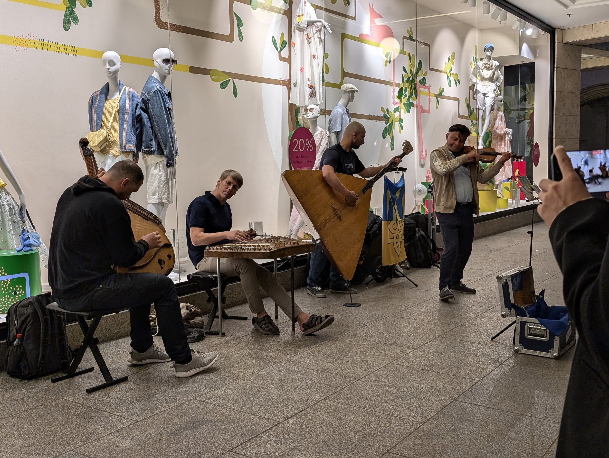
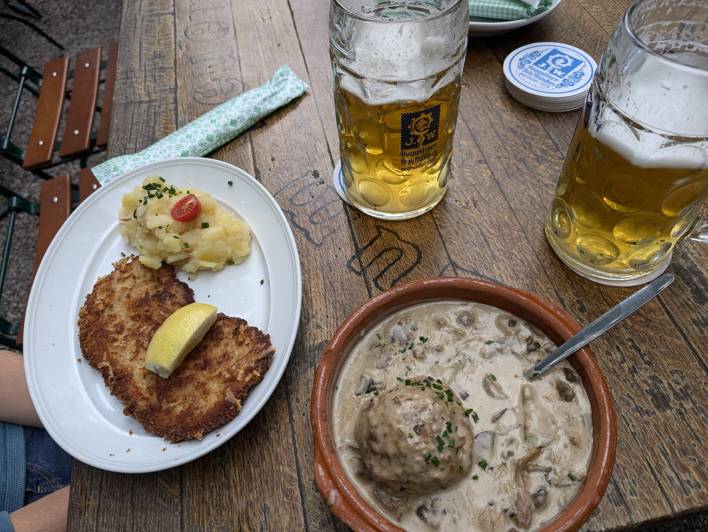
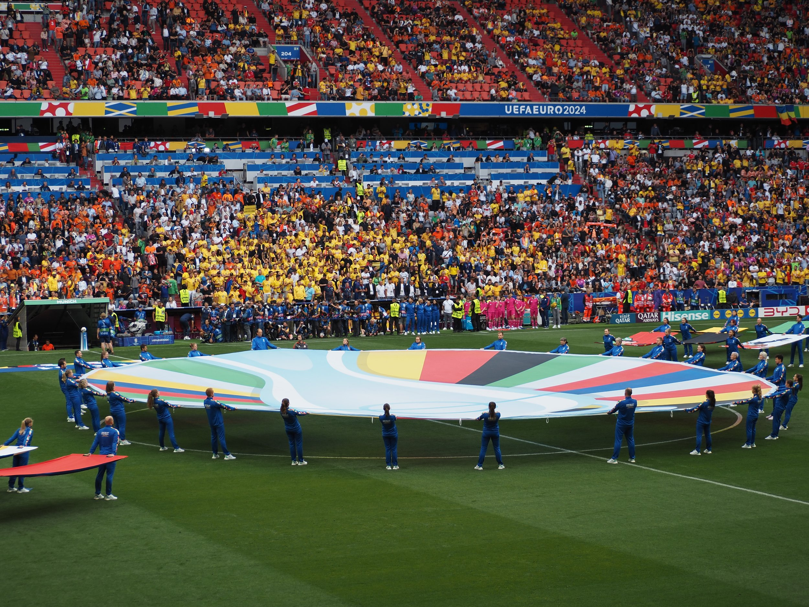
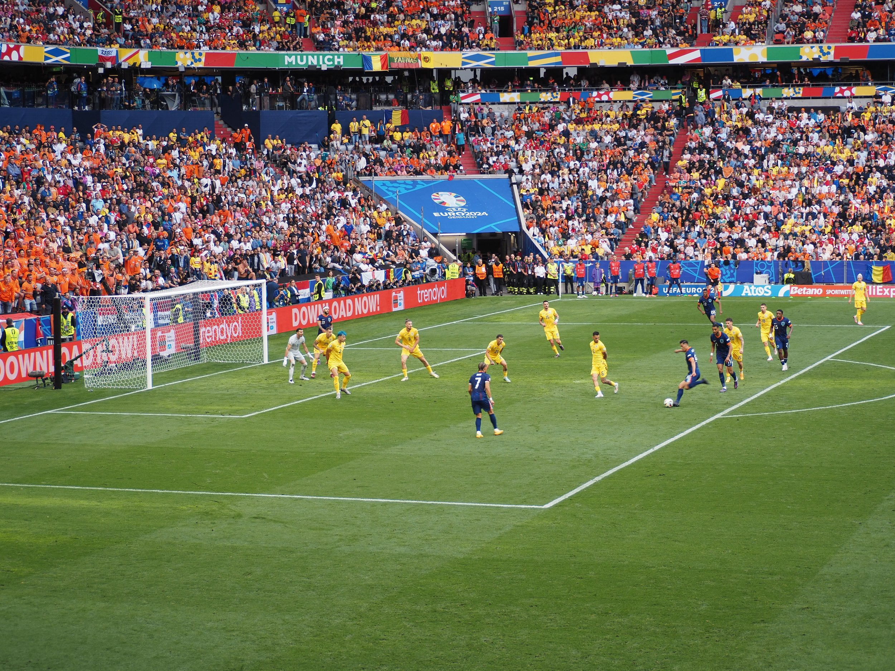
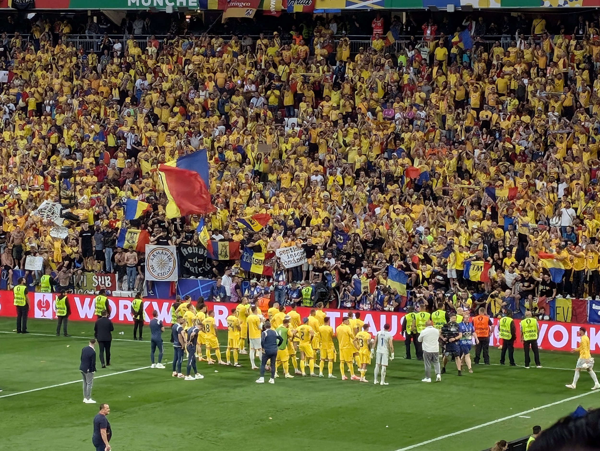

I’ve gotten quite behind on writing up posts. Kevin and I are actually currently at the tail end of our time in Mozambique where we’ve been for the last nearly ten days. Before that, we were in South Africa for a couple of weeks. And before that, we stopped by Munich which is what this post is all about. We started taking antimalarials starting our last day in South Africa and we both got hit hard by side effects, primarily stomach pain, nausea, and fatigue. We were also in the process of getting our Open Water diving licenses so between battling the side effects (which largely meant I was eating maybe the equivalent of one bowl of rice for nearly a full week) and doing the book study plus diving practicals, I got very behind on writing. We both ended up calling a doctor to try to figure out what to do since not eating for an extended period of time seemed bad; the doctor I talked to said “not much to do, I can prescribe you some anti-nausea medication” which she did and tossed in a probiotic prescription as well, I assume, because it seems not great for my stomach to take an antimalarial plus three anti-nausea pills a day. The doctor that Kevin talked to vehemently opposed taking anti-nausea pills and instead suggested switching to taking the antimalarial with dinner instead of breakfast which actually, seems to have done the trick. I love food again! It’s so weird to not feel any hunger for so long and not feel like eating things that normally I would love to eat (namely a specific South African biscuit called “Eet-Sum-Mor” that Kevin had to hide from me to avoid me eating far too many as the package clearly directed).
>

In any case, this one should be a quick one! We were trying to figure out how to get from Cappadocia to Port Elizabeth and realized that there were direct flights from Cappadocia to Germany. Kevin had been keeping up with the Euro football games and there happened to be one of the Round of 16 games happening in Munich so we sort of triangulated our plans to have a brief 48 hour stop in Munich to take care of some errands and also watch the Romania vs Netherlands match. Unfortunately, our flight out of Cappadocia was delayed by seven hours so we only arrived in Munich in the evening. I had enough time to immediately dash off to a camera store 15 minutes before closing to get some advice on my camera situation: essentially, that I’m going to have to send in my lens for repair. Darn.
Only sort of darn actually. The next day, I decided to send back two of my lens, the broken wide angle and my regular 14-42mm, and buy one lens that covers roughly the entire range with a larger aperture as well. It’s a bit tiring to always carry three lens around and swapping between three can be a bit of a hassle, so two lens seemed better. Having had this setup for a couple weeks now, I am very happy with that decision. Plus the larger aperture lets in more light so I’m quite excited to be able to take better low light pictures which would be helpful for any safari excursions we do at the crack of dawn or at dusk when animals are quite active. We also shipped back some stuff, including my lens, to the States to lighten our backpacks; it’s an undervalued luxury to be able to ship things effortlessly and for packages to be delivered within a week or so, especially after our various adventures trying to ship things from small towns like El Chaltén in Argentina. I think it took our packages two months to arrive at their destination after we managed to ship from Argentina.
Romania pregaming ahead of the match in Marienplatz.
After a morning of dashing around Munich to finish off our respective errands, Kevin and I joined up again at a beer garden for lunch, because it seems blasphemous to leave Munich without setting foot in a beer garden. A stein each plus some delicious super fatty brown food had our stomachs well filled before we trained to the arena to watch the Round of 16 Netherlands versus Romania Euros game! The Romanian fans were definitely the more enthusiastic of the two; while running errands, we both ran into the Romanian fans enthusiastically pregaming and partying in Marienplatz. I love how enthusiastic fans gets for their country; the horns, the chants, the flag waving, the rain of beer.
>

We splurged a bit on this event by trying to get seats fairly close to the field (not those crazy field-side seats, but reasonably close). IT WAS SO COOL! We were both stunned by how much we could see and experience and I have to say, the entire game, I was at the edge of my seat, completely enthralled by everything happening on the field even though I didn’t have any particular affinity for one team or other. It’s so much more engaging to watch sports live than on TV and I think we both want to watch more soccer games live in the future. To date, it’s almost been entirely tennis matches that we’ve watched live (and some American football in my past). It’s very inspiring to watch the passion of the players as well and it’s quite a different experience to watch team sports versus more individual sports like tennis. The crowd’s passion is also on another level.
>

>

In the end, the Netherlands won but I loved watching the Romanian team walk over to their fan section and soak in the love that was pouring out from their side. My understanding is that they were definitely the underdogs and they had quite an impressive run in the Euros, coming out first in their group stage so had a lot to be proud of. In the streets afterwards, you would have thought that Romania had won, not the Netherlands, as the Romanian chants continued to ring out throughout Munich, this time with the Netherlands fans joining in. Kevin and I were grinning along the entire time as we meandered our way back to our hotel; joy is just too contagious!
>

I’ll have to come back to Munich sometime to explore the city even more (Kevin’s already visited the city extensively previously)! I loved what little I saw. But for now, we jumped back on a flight to head to Johannesburg and the take a short hop to Port Elizabeth! It’s weird to think it’s only actually our third long haul flight this year given how much we’ve travelled on planes so far. Africa, here we come!
Post-match fun!